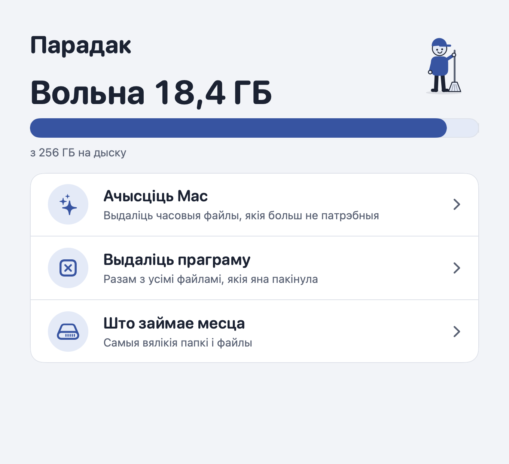
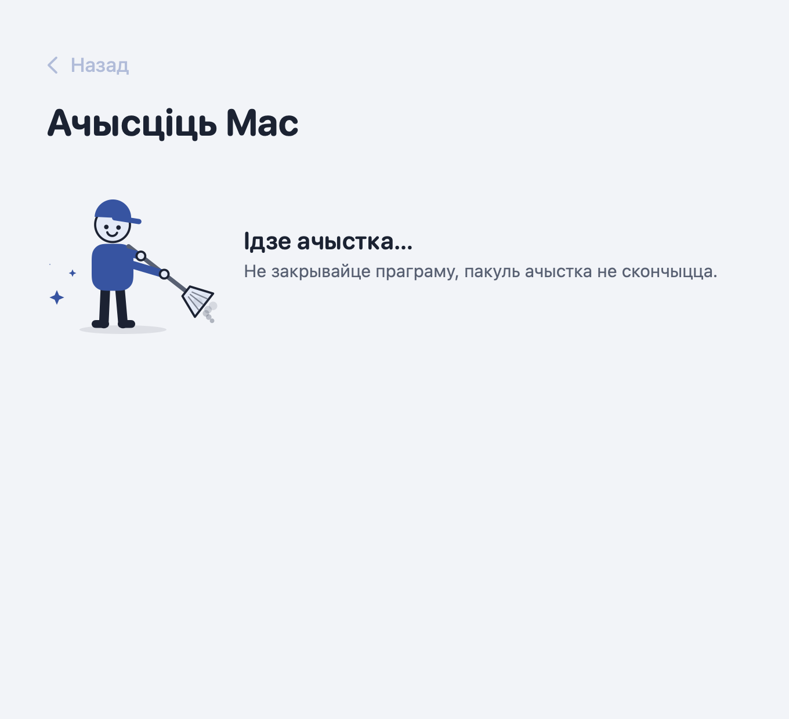
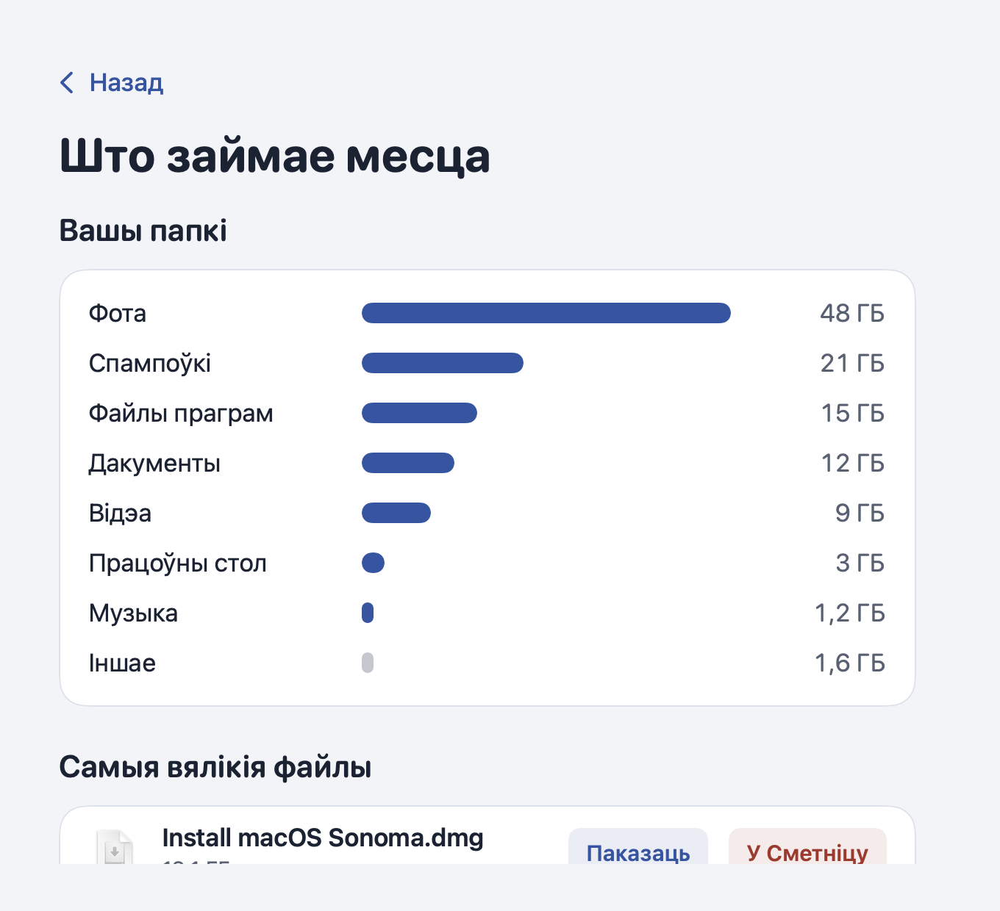

Парадак
Простая праграма па-беларуску, каб навесці парадак на Mac: ачысціць часовыя файлы, выдаліць праграму і паглядзець, што займае месца.
Як усталяваць
- Адкрыйце спампаваны файл Paradak.dmg і перацягніце «Парадак» у папку з праграмамі.
- Адкрыйце «Парадак». Першы раз Mac скажа, што не можа праверыць праграму: націсніце Done, адкрыйце System Settings → Privacy & Security (Сістэмныя налады → Прыватнасць і бяспека) і ўнізе націсніце Open Anyway. Гэта трэба зрабіць толькі адзін раз.
- Дайце праграме поўны доступ да дыска. «Парадак» сам пакажа, як гэта зрабіць.
Як гэта выглядае



Бяспечна
- Перад кожным выдаленнем праграма паказвае, што і колькі будзе выдалена, і чакае вашага пацверджання.
- Выдаленыя праграмы і файлы трапляюць у Сметніцу, адкуль іх можна вярнуць.
- Ачыстка Mac таксама ачышчае Сметніцу — пра гэта праграма папярэджвае загадзя.